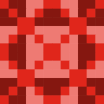
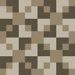

ツール
La Livrée d'Hermès のインタラクティブなツール：作る、見る、印刷する、暗号化する。「（フランス語のページ）」と記したページは、まだ翻訳されていません。
他の言語：Français · English · Español · ไทย · 简体中文 · Русский · Português · हिन्दी · Deutsch · Italiano
紋様をつくる
易経の60の像から、自分だけの織物紋様を組み立てます。 （フランス語のページ）
Magic quadricolore
64卦の紋様。カスタマイズでき、高解像度でダウンロードできます。 （フランス語のページ）
三色ギャラリー
色合いの混合から生まれた統一紋様。紋様を選ぶと、その敷き詰めを見られます。 （フランス語のページ）
二色ギャラリー
軸から生まれ、立方体上で閉じる142の二色紋様。読み取り粒度、敷き詰め、書き出し。 （フランス語のページ）

SVG 紋様
線の組み合わせ4分類の印刷用レイヤーを SVG でダウンロードします。 （フランス語のページ）
二色紋様
12×12 のセルを組み立てます。6つの階層に、それぞれの族と色合いがあります。 （フランス語のページ）
二色紋様 v2
対角線の第二の分割（YA/AY）、語彙、半周期ずらしの状態。v1 のツールと並びます。 （フランス語のページ）
キマティクス
空間周波数があなたの出す音に最も近い敷き詰め。 （フランス語のページ）
壁紙
フルスクリーンの織物壁紙。音に反応するモードと、速さを調整できる瞑想モードがあります。 （フランス語のページ）
自分の音楽を見る
曲、ファイル、またはマイクを選ぶと、スペクトルが音に最も近い La Livrée d’Hermès の紋様をページが探します。
アニメーションギャラリー
背景コレクションのアニメーションを6つのグループで：視聴、プレビュー、MP4 でのダウンロードができます。

360層
印刷用のレイヤーを抽出してダウンロードします。 （フランス語のページ）
符号化器
二重の参照、取っ手付き十字、ジャカードによる幾何学的ステガノグラフィ符号化。 （フランス語のページ）